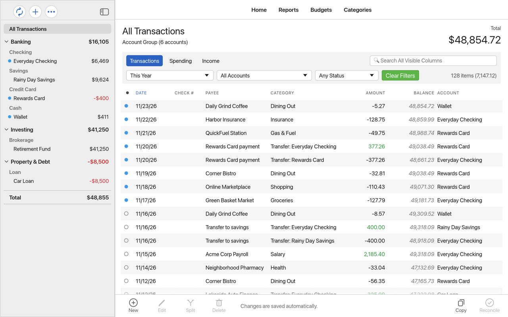
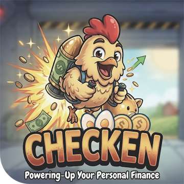
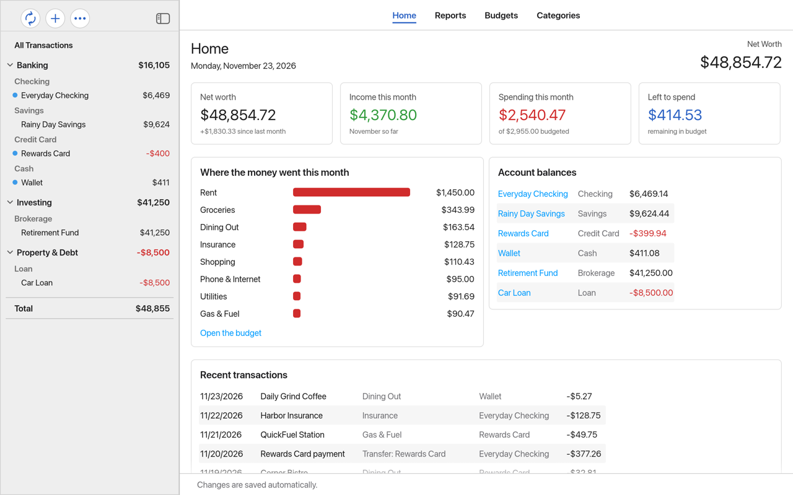
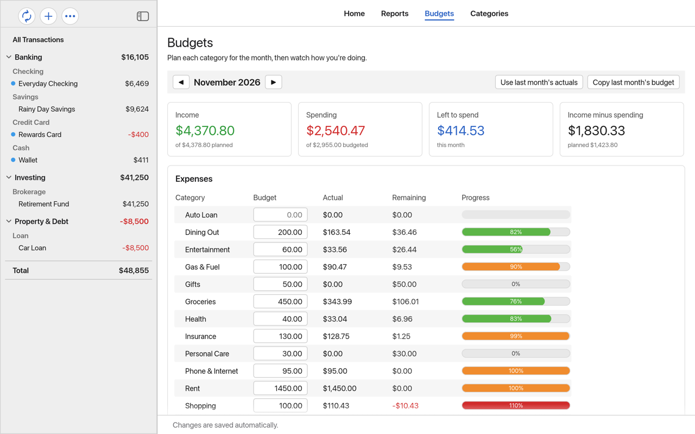
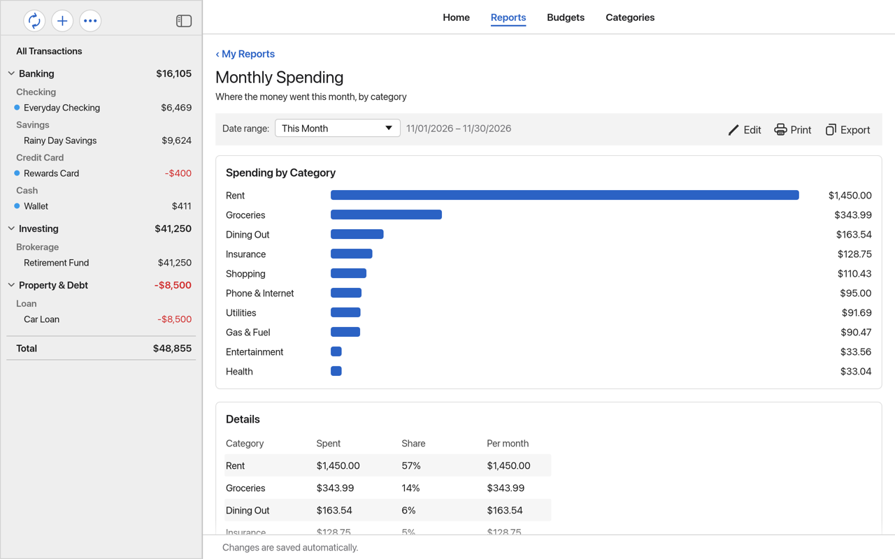
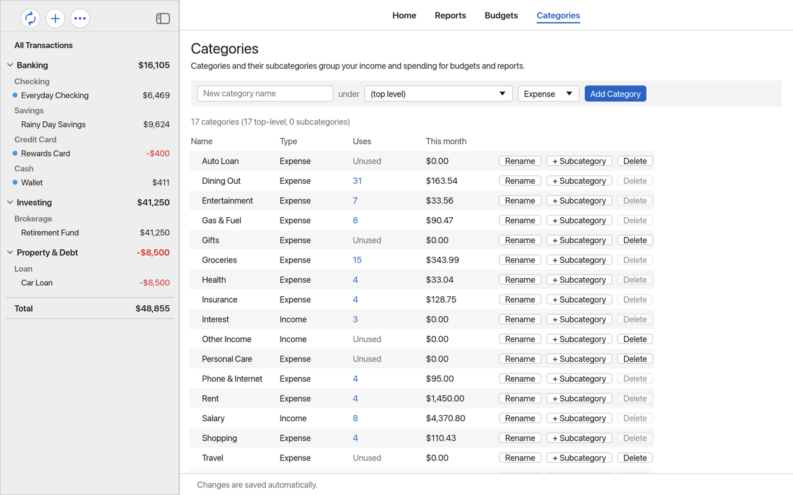
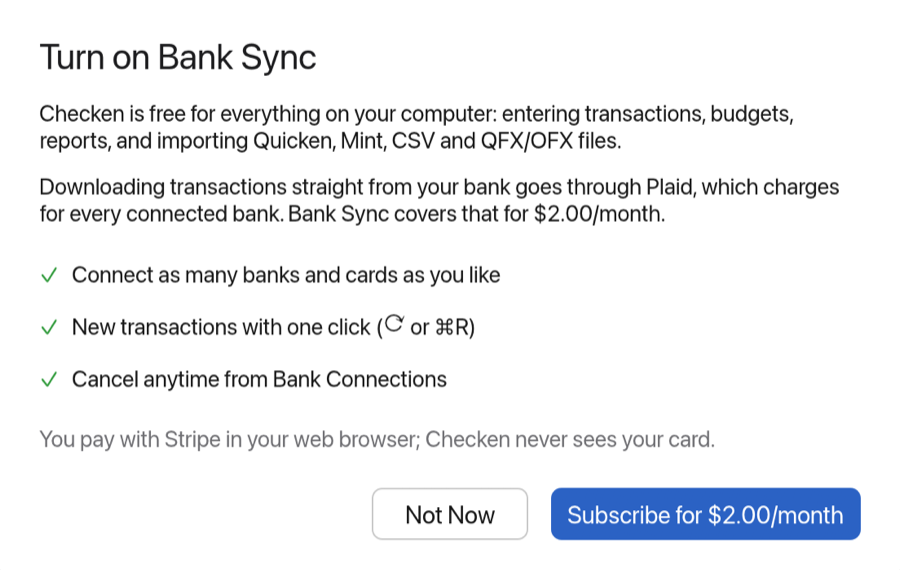

All your accounts
Checking, savings, credit cards, cash, investments and loans — grouped the way you think, with live balances and net worth.
Free · Private · Runs on your computer
Checken is a powerful personal finance app that lives on your desktop, not in someone else's cloud. Track every account, plan a budget, and see where your money goes — free to use, forever.


Everything you need. Nothing you don't.
Checken is native code written in Rust. No web views, no sign-in, no waiting on a server: it opens straight to your money and keeps up as fast as you can type.
Checking, savings, credit cards, cash, investments and loans — grouped the way you think, with live balances and net worth.
Plan each category for the month and watch progress bars turn orange, then red, before you overspend.
Spending by category, income vs. expenses, net worth and comparisons — with charts, details, printing and export.
Nest categories as deep as you like — Auto › Fuel, Home › Utilities — and totals roll up automatically.
Import Quicken and Mint exports or your bank's QFX/OFX files. Checken previews everything and catches duplicates first.
No account, no tracking, no ads. Your data is one file on your own computer, saved automatically and easy to back up.
Take the tour
Net worth, this month's income and spending, what's left in your budget, where the money went, and your latest transactions — the moment Checken opens.

Type a plan for each category, or start from last month's budget or last month's actual spending. Progress bars show exactly where you stand.

Open a saved report or a standard one, pick a date range, and get a clear chart with the details underneath. Edit what it shows, print it, or export it.

Add, rename and nest categories, see how often each one is used, and keep income and expenses apart — your history follows every change.

Why Checken
Checken does the everyday work of a desktop money manager — registers, budgets, reports, imports — in a lighter, faster native app that doesn't charge you every year to open your own data.
| Checken | Quicken Classic* | |
|---|---|---|
| Price to use | Free, forever | Annual subscription |
| Bank downloads | Optional, $2/month | Included in the subscription |
| Account or sign-in required | No | Quicken ID required |
| macOS and Windows | Yes | Yes |
| Linux | Yes | No |
| Your data | One open JSON file you own | Proprietary data file |
| Imports Quicken exports | Yes — CSV and QFX/OFX | — |
| Built with | Native Rust, no web views | — |
* Based on Quicken Classic's publicly listed plans at the time of writing; check quicken.com for current details. Quicken is a trademark of Quicken Inc. Checken is independent and not affiliated with or endorsed by Quicken Inc.
Optional · Bank Sync
Checken is complete on its own. When you'd rather not type or import, turn on Bank Sync: Checken connects to thousands of US banks and card issuers through Plaid and downloads new transactions whenever you press ⟳.

Bank connections powered by Plaid · Payments by Stripe
$0 forever
Optional add-on
$2 / month
Download
The latest build of Checken, made automatically from the source code.
Apple silicon and Intel · macOS 11 or later
Download .dmgWindows 10 and 11 · 64-bit installer
Download installerx86-64 · Debian and Ubuntu package, or a portable archive
Download .deb or the .tar.gz for any distributionmacOS: open the .dmg and drag Checken to Applications. Checken isn't notarized by Apple yet, so the first time, right-click it and choose Open.
Windows: if SmartScreen appears, choose More info › Run anyway.
Linux: sudo apt install ./checken-linux-amd64.deb, or unpack the archive and run Checken.
Checken opens with sample data so you can explore. When you're ready, start fresh and add your own accounts or import your history.
Questions
Yes. Everything that runs on your computer — accounts, transactions, budgets, reports, categories, imports and backups — is free to use with no time limit. Only the optional Bank Sync, which costs us real money per bank connection, is $2 a month.
On your computer, in one file: ~/Library/Application Support/Checken/ledger.json on a Mac, or ~/.checken/ledger.json on Windows and Linux. It's saved automatically as you work, and File › Save a Backup keeps a copy anywhere you like.
Yes. Export your transactions from Quicken (CSV) or Mint (CSV), or download QFX/OFX files from your bank, then use File › Import. Checken shows a preview, puts each account's transactions in the right place, and skips duplicates.
You sign in to your bank inside Plaid's own secure window — Checken never sees your bank username or password. Plaid gives the Bank Sync server an access key, which stays on the server; Checken only knows an anonymous id for each connection.
Checken keeps working exactly as before, with every transaction you've already downloaded. Bank downloads simply stop until you subscribe again. You can cancel anytime from Bank Connections › Manage Subscription.
Most banks, credit unions and card issuers in the United States that Plaid supports. You'll find yours by name when you connect.